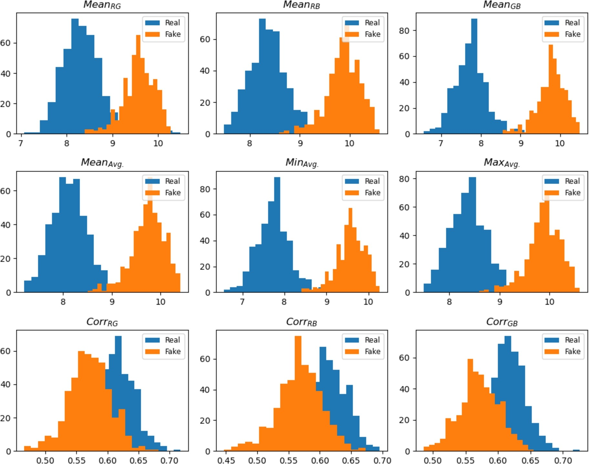
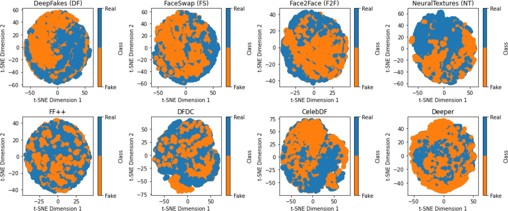
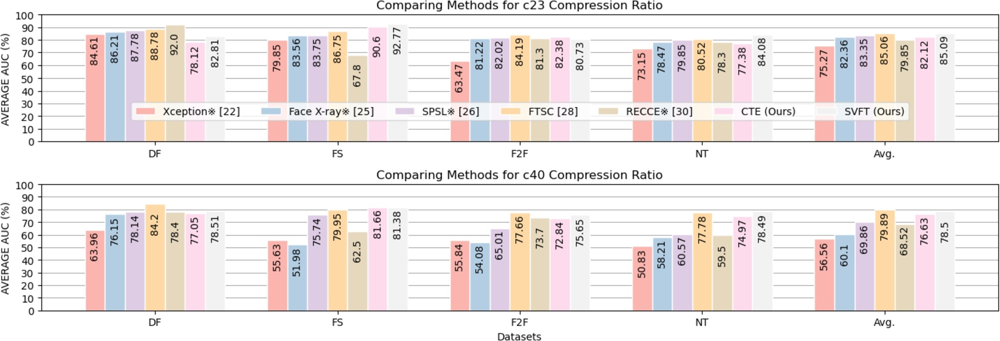
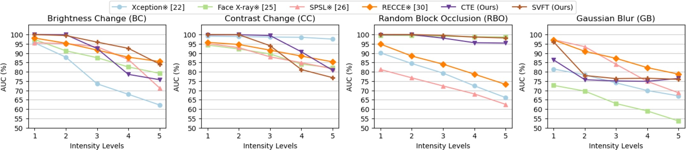
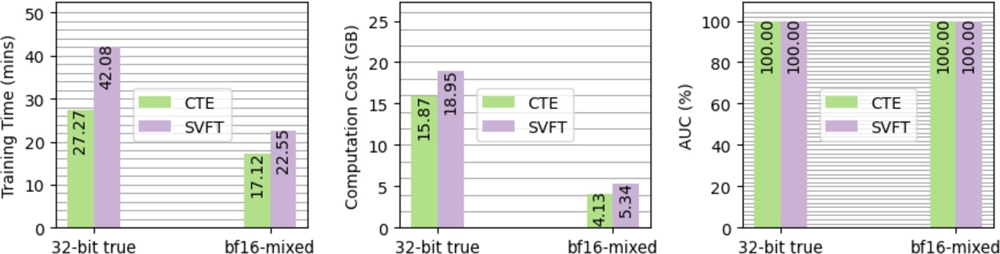

PUBLICATION论文 · Alexandria Engineering Journal · 2024
ABSTRACT摘要
Deepfake videos present a significant challenge in the current media landscape. While existing detection methods demonstrate satisfactory performance within known training distributions, they tend to overfit to specific forgery patterns and suffer severe degradation when confronted with unseen manipulations, cross-dataset evaluations, and real-world perturbations such as compression and image degradation. The lack of generalization remains a critical bottleneck, as pure spatial-domain detectors often overlook the spectral anomalies introduced by generative upsampling operations. 深度伪造视频对当前媒体环境构成重大挑战。现有检测方法在已知训练分布内表现良好，但倾向于过拟合特定伪造模式，在面对未知操纵、跨数据集评估和压缩及图像退化等真实世界扰动时性能严重下降。泛化能力不足仍然是一个关键瓶颈，因为纯空间域检测器往往忽视了生成式上采样操作引入的频谱异常。
We propose the SpectraVisionFusion Transformer (SVFT), a novel multi-modal deepfake detection framework that jointly analyzes spatial visual cues and frequency-domain statistical artifacts. The framework comprises two specialized encoders: a Convolutional Transformer Encoder (CTE) based on CvT-13 that captures local spatial patterns and high-level visual features, and a Language Transformer Encoder (LTE) based on DistilBERT that models contextual relationships within spectral statistical features extracted via 2D-DFT. A weighted feature embedding fusion mechanism (α = 0.7, β = 0.3) integrates these complementary modalities, followed by a common cross-attention transformer decoder and classification head. The entire model totals 86.58M parameters with 25.89 GFLOPs complexity. 我们提出了SpectraVisionFusion Transformer（SVFT），一种新颖的多模态深度伪造检测框架，联合分析空间视觉线索和频域统计伪影。该框架包含两个专用编码器：基于CvT-13的卷积Transformer编码器（CTE）捕获局部空间模式和高级视觉特征，基于DistilBERT的语言Transformer编码器（LTE）对通过2D-DFT提取的频谱统计特征内的上下文关系进行建模。加权特征嵌入融合机制（α = 0.7，β = 0.3）整合这些互补模态，随后通过公共交叉注意力Transformer解码器和分类头。整个模型总计86.58M参数，复杂度为25.89 GFLOPs。
Evaluations on FaceForensics++ (FF++), DFDC, Celeb-DF-v2, and DeeperForensics-1.0 demonstrate strong generalization. SVFT achieves 92.57% average AUC in cross-manipulation evaluation on FF++ and 80.63% average AUC in cross-dataset evaluation, surpassing Xception, Face X-ray, SPSL, RECCE, CPT, and SFDG. The model also exhibits robustness against compression (c23 / c40) and four unseen perturbations, with an average AUC of 91.17% across brightness change, contrast change, random block occlusion, and Gaussian blur. 在FaceForensics++（FF++）、DFDC、Celeb-DF-v2和DeeperForensics-1.0上的评估展示了强大的泛化能力。SVFT在FF++跨操纵评估中达到92.57%平均AUC，在跨数据集评估中达到80.63%平均AUC，超越了Xception、Face X-ray、SPSL、RECCE、CPT和SFDG。该模型还对压缩（c23/c40）和四种未知扰动表现出鲁棒性，在亮度变化、对比度变化、随机块遮挡和高斯模糊上的平均AUC为91.17%。
METHOD方法
We apply 2D-DFT to each RGB channel of video frames to expose spectral anomalies caused by generative upsampling. Nine statistical features are extracted: MeanRG, MeanRB, MeanGB, MeanAvg, MinAvg, MaxAvg (average spectrum differences between color channels), and CorrRG, CorrRB, CorrGB (Pearson correlation coefficients between channel spectra). Deepfakes exhibit lower inter-channel correlation because generative models fail to enforce natural correlation constraints during synthesis, leaving detectable statistical fingerprints. 我们对视频帧的每个RGB通道应用2D-DFT，以揭示生成式上采样引起的频谱异常。提取九个统计特征：MeanRG、MeanRB、MeanGB、MeanAvg、MinAvg、MaxAvg（颜色通道间平均频谱差异），以及CorrRG、CorrRB、CorrGB（通道频谱间的皮尔逊相关系数）。深度伪造表现出较低的通道间相关性，因为生成模型在合成过程中未能强制自然相关性约束，留下可检测的统计指纹。
The CTE is built on the CvT-13 architecture (19.98M parameters) and processes raw RGB face frames resized to 224×224. It introduces convolutional token embedding and convolutional projection into the vision transformer paradigm, enabling hierarchical local spatial context modeling. Three stages (56×56, 28×28, 14×14) progressively downsample while increasing feature dimension. Multi-Head Self-Attention (MHSA) and MLP blocks capture both low-level edges and high-level semantic visual patterns indicative of facial manipulation. CTE基于CvT-13架构（19.98M参数），处理调整大小为224×224的原始RGB人脸帧。它在视觉Transformer范式中引入卷积token嵌入和卷积投影，实现分层局部空间上下文建模。三个阶段（56×56、28×28、14×14）逐步下采样同时增加特征维度。多头自注意力（MHSA）和MLP模块捕获指示面部操纵的低级边缘和高级语义视觉模式。
The LTE is derived from DistilBERT (66M parameters) and treats spectral statistical features as a token sequence. Using WordPiece tokenization (vocabulary 30,522), the model embeds numerical spectral statistics into a 512-dimensional hidden space. Six transformer blocks with 12 attention heads and bi-directional language modeling capture contextual relationships and semantic meaning within the frequency-domain feature sequence. This allows the model to reason about spectral anomalies as structured linguistic patterns rather than isolated numerical values. LTE源自DistilBERT（66M参数），将频谱统计特征视为token序列。使用WordPiece分词（词表30,522），模型将数值频谱统计量嵌入到512维隐藏空间。六个Transformer块配备12个注意力头，通过双向语言建模捕获频域特征序列内的上下文关系和语义含义。这使模型能够将频谱异常作为结构化语言模式而非孤立数值进行推理。
A weighted fusion layer combines CTE and LTE embeddings with α = 0.7 (spatial) and β = 0.3 (frequency), emphasizing spatial cues while preserving spectral regularization. The fused features pass through a 2-layer transformer decoder with masked multi-head attention and feed-forward networks for cross-modal reasoning. The classification head applies GELU activation, dropout (p = 0.25), and a linear projection to produce binary logits. The model is trained with a structured strategy—alternating real and fake sequences—which reduces EER from 0.1471 to 0.0796. Mixed-precision (bf16) training cuts time by 24–35% with no AUC loss. 加权融合层以α = 0.7（空间）和β = 0.3（频域）组合CTE和LTE嵌入，强调空间线索同时保留频谱正则化。融合特征通过配备掩码多头注意力和前馈网络的两层Transformer解码器进行跨模态推理。分类头应用GELU激活、dropout（p = 0.25）和线性投影生成二元logits。模型采用结构化策略训练——交替真实和伪造序列——将EER从0.1471降至0.0796。混合精度（bf16）训练将时间减少24–35%且AUC无损失。

Fig. 3 — Distributions of spectral statistical features (Mean, Min, Max, Correlation) for real (blue) and deepfake (orange) frames. Clear separability validates the forensic value of frequency-domain statistics. © 2024 Elsevier. 图3 — 真实（蓝色）和深度伪造（橙色）帧的频谱统计特征（均值、最小值、最大值、相关性）分布。明显的可分离性验证了频域统计量的取证价值。© 2024 Elsevier。
Fig. 4 — t-SNE visualizations of learned LTE embeddings across eight datasets/manipulations. Real and fake clusters are more compact and separable than single-domain baselines. © 2024 Elsevier. 图4 — 跨八个数据集/操纵的学习LTE嵌入t-SNE可视化。真实和伪造簇比单域基线更紧凑且可分离。© 2024 Elsevier。RESULTS结果
Trained on one FF++ manipulation and tested on the other three without fine-tuning. SVFT achieves an average cross-manipulation AUC of 92.57%. Notable gains include +17.43% (DF → FaceSwap), +5.25% (DF → Face2Face), and +12.86% (DF → NeuralTextures) over competing methods. The coordinated spatial-frequency analysis prevents overfitting to specific forgery textures, enabling robust detection of unseen synthesis pipelines. 在FF++的一种操纵上训练，在其余三种上无微调测试。SVFT实现平均跨操纵AUC92.57%。显著增益包括+17.43%（DF → FaceSwap）、+5.25%（DF → Face2Face）和+12.86%（DF → NeuralTextures）。协调的空间-频域分析防止对特定伪造纹理的过拟合，实现对未知合成管道的鲁棒检测。
Trained on FF++ (raw) and evaluated on DFDC, Celeb-DF-v2, and DeeperForensics-1.0. SVFT achieves 83.50% AUC on DFDC, 78.12% on CDF, and 80.27% on Deeper, yielding an average cross-dataset AUC of 80.63%. This outperforms Xception, Face X-ray, SPSL, MultiAtt, RECCE, CPT, and SFDG—confirming that spectral statistical cues provide domain-invariant forensic evidence. 在FF++（raw）上训练，在DFDC、Celeb-DF-v2和DeeperForensics-1.0上评估。SVFT在DFDC上达到83.50% AUC，CDF上78.12%，Deeper上80.27%，平均跨数据集AUC为80.63%。这超越了Xception、Face X-ray、SPSL、MultiAtt、RECCE、CPT和SFDG——证实频谱统计线索提供了域不变的取证证据。
Evaluated on heavily compressed FF++ videos (c23 and c40). SVFT achieves an average AUC of 85.09% on c23 and 78.50% on c40. The frequency-domain branch provides inherent resilience because spectral statistical features are less sensitive to compression artifacts than raw pixel textures. On FaceSwap c23, SVFT reaches 92.77%, outperforming the compression-specialized FTSC method by 6.02%. 在重度压缩的FF++视频（c23和c40）上评估。SVFT在c23上达到平均AUC85.09%，c40上78.50%。频域分支提供固有韧性，因为频谱统计特征对压缩伪影的敏感度低于原始像素纹理。在FaceSwap c23上，SVFT达到92.77%，超越专门面向压缩的FTSC方法6.02%。
Tested on four unseen perturbations at five intensity levels: Brightness Change, Contrast Change, Random Block Occlusion, and Gaussian Blur. SVFT achieves an average AUC of 91.17% across all degradations. It excels on Brightness Change (94.42%) and Block Occlusion (99.25%), where the interplay between spatial and spectral modalities compensates for localized distortions. The model remains competitive on Contrast Change and Gaussian Blur, though high-level blur degrades frequency statistics. 在五种强度水平的四种未知扰动上测试：亮度变化、对比度变化、随机块遮挡和高斯模糊。SVFT在所有退化上的平均AUC为91.17%。它在亮度变化（94.42%）和块遮挡（99.25%）上表现优异，空间与频谱模态的相互作用补偿了局部失真。模型在对比度变化和高斯模糊上保持竞争力，尽管高级模糊会退化频率统计量。
(1) Fusion weights: α=0.7 / β=0.3 is optimal, yielding 83.50% AUC on DFDC; deviating from this ratio degrades performance by up to 5.61%. (2) LTE branch: Removing the frequency branch drops average cross-manipulation AUC by 5–12%, confirming that spectral statistics are essential for generalization. (3) Structured training: Alternating real/fake sequences reduces EER from 0.1471 to 0.0796. (4) Mixed precision: bf16-mixed cuts training time by ~35% (CTE) and ~24% (SVFT) with zero AUC penalty. (1) 融合权重：α=0.7 / β=0.3是最优的，在DFDC上产生83.50% AUC；偏离此比例会使性能下降多达5.61%。(2) LTE分支：移除频域分支使平均跨操纵AUC下降5–12%，证实频谱统计对泛化至关重要。(3) 结构化训练：交替真实/伪造序列将EER从0.1471降至0.0796。(4) 混合精度：bf16-mixed将训练时间减少约35%（CTE）和约24%（SVFT），AUC惩罚为零。

Fig. 13 — Cross-compression evaluation on FF++ (c23 and c40). SVFT maintains leading AUC across all four manipulations under both mild and heavy compression. © 2024 Elsevier. 图13 — FF++跨压缩评估（c23和c40）。SVFT在轻度和重度压缩下对所有四种操纵保持领先AUC。© 2024 Elsevier。
Fig. 15 — Robustness against four unseen perturbations (Brightness, Contrast, Block Occlusion, Gaussian Blur) over five intensity levels. SVFT outperforms texture-based methods on brightness and occlusion. © 2024 Elsevier. 图15 — 对四种未知扰动（亮度、对比度、块遮挡、高斯模糊）在五种强度水平上的鲁棒性。SVFT在亮度和遮挡上超越基于纹理的方法。© 2024 Elsevier。
Fig. 16 — Mixed-precision (bf16-mixed) vs. 32-bit true precision. Training time and computation cost are significantly reduced while AUC remains at 100% on intra-evaluation. © 2024 Elsevier. 图16 — 混合精度（bf16-mixed）与32位真精度对比。训练时间和计算成本显著降低，同时内部评估AUC保持100%。© 2024 Elsevier。LIMITATIONS & FUTURE WORK局限性与未来工作
Heavy compression and blur. While SVFT outperforms competitors on c40 compression, absolute AUC still degrades compared to raw video. Similarly, Gaussian blur at higher intensity levels destroys high-frequency spectral statistics, causing performance drops. Future work will explore compression-aware and de-blurring pre-processing to mitigate these artifacts. 重度压缩与模糊。虽然SVFT在c40压缩上超越竞争对手，但绝对AUC相比原始视频仍下降。类似地，高强度水平的高斯模糊破坏高频频谱统计，导致性能下降。未来工作将探索压缩感知和去模糊预处理以减轻这些伪影。
DeeperForensics gap. On the Deeper dataset, SVFT (80.27%) underperforms relative to SFDG (92.10%). Deeper employs advanced real-world tampering with diverse lighting and identities that challenge the current spectral priors. Expanding the diversity of training spectral statistics and incorporating adversarial augmentation may close this gap. DeeperForensics差距。在Deeper数据集上，SVFT（80.27%）相对于SFDG（92.10%）表现不足。Deeper采用具有多样光照和身份的高级真实世界篡改，对当前频谱先验构成挑战。扩展训练频谱统计的多样性并纳入对抗增强可能缩小这一差距。
Model complexity. With 86.58M parameters and 25.89 GFLOPs, SVFT is computationally demanding for real-time deployment. Network pruning, knowledge distillation, or lightweight transformer variants should be investigated to reduce inference latency without sacrificing generalization. 模型复杂度。具有86.58M参数和25.89 GFLOPs，SVFT对实时部署而言计算需求较高。应研究网络剪枝、知识蒸馏或轻量级Transformer变体，以减少推理延迟而不牺牲泛化能力。
Temporal modeling. SVFT currently operates on single-frame or short video-clip inputs. Explicit temporal modeling across frame sequences—such as bi-level temporal coherence or 3D convolutional extensions—could further improve detection of temporally inconsistent deepfake videos. 时序建模。SVFT目前基于单帧或短视频片段输入。跨帧序列的显式时序建模——如双层时序一致性或3D卷积扩展——可进一步改进对时序不一致深度伪造视频的检测。
BIBTEX引用
@article{AMIN2024592,
title = {Deepfake detection based on cross-domain local characteristic analysis with multi-domain transformer},
journal = {Alexandria Engineering Journal},
volume = {91},
pages = {592-609},
year = {2024},
issn = {1110-0168},
doi = {https://doi.org/10.1016/j.aej.2024.02.035},
url = {https://www.sciencedirect.com/science/article/pii/S1110016824001753},
author = {Muhammad Ahmad Amin and Yongjian Hu and Chang-Tsun Li and Beibei Liu},
keywords = {Deepfake detection, Multi-domain transformer, Generalization performance, Spectral anomalies, Spatial-frequency domains}
}COPYRIGHT NOTICE版权声明
© 2024 THE AUTHORS. Published by Elsevier BV on behalf of Faculty of Engineering, Alexandria University. This is an open access article under the CC BY-NC-ND license (http://creativecommons.org/licenses/by-nc-nd/4.0/). © 2024 作者。由Elsevier BV代表亚历山大大学工程学院出版。本文根据CC BY-NC-ND许可进行开放获取。
This page is a personal academic landing page. The full paper is available via ScienceDirect. Figures are reproduced with permission from Alexandria Engineering Journal. 本页面为个人学术着陆页。完整论文可通过ScienceDirect获取。图表经Alexandria Engineering Journal许可转载。